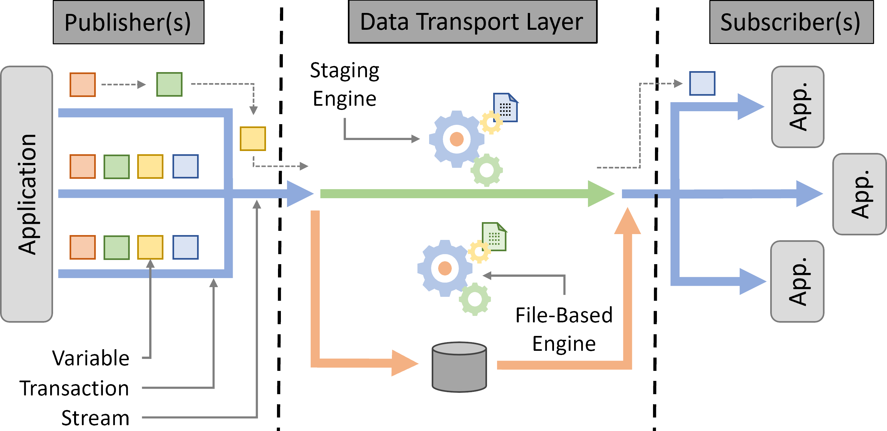

Introduction
What is DTLMod
A data transport layer is the central component in a publish-subscribe system that connects applications that produce data objects to those that consume them, moves these data objects, and keeps track of metadata.
The figure below shows a generic data transport layer and introduces the terminology used by DTLMod.
{kind=link}
On the publisher side, one or more applications (e.g., large-scale physics simulations) produce data, represented by multiple variables, and publish them to the DTL within a transaction using a specific stream. On the subscriber side, one or more applications (e.g., analysis and visualization components) subscribe to specific streams to retrieve the data they need from the DTL. The DTL itself exposes multiple engines in charge of the actual data transport from the publisher(s) to the subscriber(s). These engines either rely on files stored on a file system or use staging techniques to move data in memory or over the network.
DTLMod builds on the low-level abstractions exposed by the SimGrid toolkit. Typical SimGrid-based simulators are composed of multiple actors (i.e., simulated processes) that launch activities (i.e., computations, network communications, or I/O operations) defined by an amount of work to do (e.g., bytes to read, write, or transfer, compute operations to perform) on resources (i.e., CPUs, network links, or disks). The simulation models at the core of SimGrid determine the respective completion date of these activities to make the simulated time advance. DTLMod combines these low-level abstractions to expose higher-level concepts and ease the writing of simulators of in situ processing.
What DTLMod allows you to do
- Here follow some research objectives for which DTLMod is relevant:
Prototype your in situ workflow, starting with high-level abstract versions of the different components to define the workflow structure and its data flow. You can then replace some of the components by the actual MPI code of your application or analyses, thanks to the integration with SMPI
Compare the behavior and performance, at scale, of different data transport configurations and study the effects of resource allocation strategies on performance.
Explore “what-if” scenarios in which you can scale or alter the performance of your computing and storage infrastructure, inject delays or failures, or modify the structure of your in situ workflow.
Anatomy of a project that uses DTLMod
As any SimGrid-based simulator, a project that uses DTLMod will rely on the following components:
A set of processes that simulate the logic of each component of an in situ workflow using either the S4U API of SimGrid or as part of a full-fledged MPI parallel application, in combination with the API of DTLMod for everything related to data transport.
A simulated computing and storage infrastructure which consists of a description (in either XML or C++) of the hardware (e.g., compute nodes, network links, disks) of this distributed system.
A deployment of the defined processes. To simulate their execution on the simulated infrastructure, you have to describe how they are deployed on individual computing resources.
The above components are put together to run a simulation experiment that produces outcomes (logs, visualization, statistics) that help users answer their research and development questions. These outcomes typically include a timeline of the application execution.